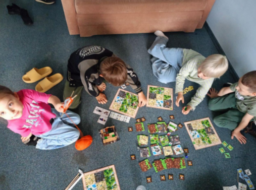
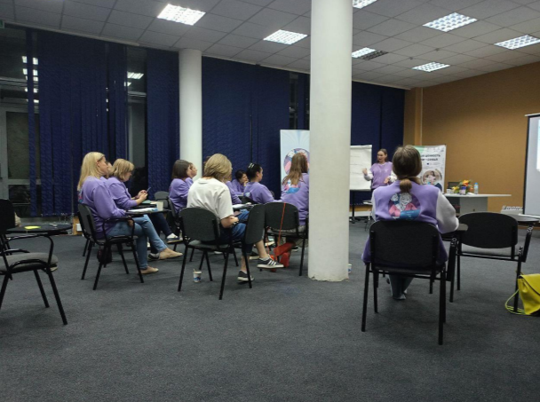

РЕГИОНАЛЬНАЯ ОБЩЕСТВЕННАЯ ОРГАНИЗАЦИЯ «МОЛОДЕЖНАЯ ПАЛАТА САНКТ-ПЕТЕРБУРГА»
Проект для активных мам Петербурга направлен на развитие, обучение, общение, психологическую поддержку, развитие профессиональных и личностных компетенций молодых матерей, для совмещения отпуска по уходу за ребенком с работой, хобби, социальной активностью. Реализация проекта собствует укреплению семей.
Школа социального проектирования для мам Санкт-Петербурга «Мама на выезде» проходила в несколько этапов:
- 1 этап: проведение офлайн и онлайн занятий по проектному менеджменту и социальному проектированию, начало разработки проектов участницами;
- 2 этап: проведение выездного мероприятия «Мамы на выезде» - образовательное выездное мероприятие по социальному проектированию;
- 3 этап: менторская поддержка проектов со стороны женщин-руководителей НКО, предприятий и малого бизнеса.
В результате проекта участники:
- получили знания в области социального проектирования;
- разработали собственные проекты;
- реализовали с помощью менторов свои проекты.
 Количество благополучателей: 100 человек.
Количество волонтеров: 20 человек.